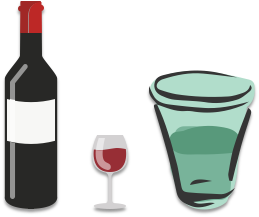

- 00 开篇词：了解面试“潜规则”，从海选中脱颖而出.md.html
- 01 设计一份吸引面试官的简历.md.html
- 02 读懂职位 JD，精准投递简历.md.html
- 03 把握投递简历的黄金时间段.md.html
- 04 做好充分的准备去面试.md.html
- 05 把握面试时的关键点.md.html
- 06 捕捉 HR 微表情，做出应对策略.md.html
- 07 巧妙推销自己的 3 个技巧.md.html
- 08 认清自身实力，明确求职方向.md.html
- 09 判断公司背景，做出合理选择.md.html
- 10 了解行业薪资，清晰找准定位.md.html
- 11 目标明确，阐明沟通.md.html
- 12 工作交接流程福利衔接.md.html
07 巧妙推销自己的 3 个技巧
你好，我是你的面试课老师杨宇堃，欢迎进入第 07 课时的内容“巧妙推销自己的 3 个技巧”。
平和的心态，展现你的热情
对于任何一家企业在选择合适的人选时，一般都会从这几个方面进行筛选：首先是否具有相关的项目经验；其次是否聪明或者是否具有独自解决问题的能力；最后判断能否融入到团队的氛围中，以及是否对企业或者行业具有热情的态度来面对。
前两个方面所说的是面试者的行业经验和智商，对于一家公司在招聘时当然重要，但这并不是一个团队可以获得成功的关键因素。相信很多企业在选择五年经验以内的候选人时，这两个方面的考察一定会低于最后性格部分的考察。
相信很多小伙伴会有疑问，性格（工作热情）相比情商或工作经验对于一家企业真有那么重要吗？这个我可以肯定的告诉你，面试官非常喜欢性格开朗、积极主动、乐于挑战的候选人；同样也很排斥在乎个人得失、把责任都推给前司的候选人。相信你在工作中也会遇到过类似的同事，可以回忆一下，当时你是不是也很排斥呢？
在一个团队里如果存在一位性格比较消极的员工，很容易将其他员工传染，从而导致整个团队产出效率低下。也就是我们常说的“酒与污水定律”：是指把一勺酒倒入到一桶污水里，得到是一桶污水；如果把一勺污水倒入倒一桶酒中，得到的还是一桶污水。所以，对于面试官来说，候选人的性格和态度是至关重要的。
 如何在面试官面前表现出积极正向、乐观的心态呢？
首先，需要表现出对应聘岗位和企业的认同感，也让面试官看到你为了这份工作做了很充分的准备，或者积极的介绍之前做过的项目与应聘企业项目的相似度。这些表现都可以让面试官感受到你的热情和积极正向的输出，非常不建议面试时问什么答什么的做法。
比如，当面试官问「你为什么选择目前的这份工作」时？如果只是单纯地回答「我喜欢这份工作」且没有任何的解释，那面试官无法判断你所说的真实性。此时建议这样回答：“因为目前这份工作和我之前做过的 xxx 项目非常相像。我在参与上一份项目时学习到了 xxx 技能，找到了一个新的发展方向，从而喜欢上了这样的一份职业。”，相信这样的表述面试官才能感受到你的热情和积极正向的态度。
其次，可以和面试官介绍一下，你在上一家公司与同事和领导相处融洽的案例，让面试官感受到你是一个积极融入团队中的人。比如「在前司获得的成长有哪些，与前 leader 的身上都学习到了哪些工作思路和成长思路等」，相信面试官会认为你是一个非常值得培养和积极主动学习的人。
了解行业发展，清晰表达你的见解
除了表现出积极和热情以外，如果在面试的过程中可以介绍一些你对行业以及对自己所从事工作的理解或见解，相信面试官一定会被你的表述深深吸引，也同样加强了希望可以录取你的信心。
比如，当面试官问「你怎么看对目前所从事的工作价值」时，如果这样回答「我觉得这是一份收入，并没有太多的感受，也不知道自己未来的发展是什么样的」，面试官会判断你是一个没有任何思考的人，应该也不会在自己的岗位上有什么作为。
此时建议这样回答：“我非常喜欢我的工作，我感觉我的岗位在目前行业的发展中起到了非常重要的作用，我们所做的几个项目都在推动公司的发展，也帮助公司的业绩从 XX% 提升到了 XX%（在这里举一些自己做过的项目经验），而且我也希望可以继续从事这样的工作，因为它可以让我获得更多的成就感。相信这个行业的发展是 xxxxxxxxx，我的职业规划也会跟随这个行业的发展而得到很大的提升。”
当面试官听到这样的介绍时，会非常清晰地了解你对自己的工作已经有了深入的思考，同时也能感受到你不止局限在自己的工作领域中，还在通过行业的变化和了解，来规划自己的职业，是一个很有潜力的候选人。
真诚的对待每一次面试
当然除了积极的态度以及清晰的定位以外，还必须是一个真诚、正直的人。如果在面试的过程中表现良好、思考很全面，但是与实际工作的内容只有 50% 的真实度，这样会很容易在面试官面前露馅，然后给你打上一个不真诚的标签，自然而然，面试也就到此结束了。
因此，很多企业非常在乎候选人是否诚实或者真诚。也许你的职业经历并不是很丰富、项目内容并没有那么完美，但如果将自己所做的内容真实、完整地呈现给面试官，同时加上自己的思考，相信很多面试官会参考你的工作年限然后给你一个非常公平的反馈。
通过以上三个方面的讲述，可以了解到面试官在面试的时候更看重的是品德，然后是性格，最后才是工作经验和学历。希望你听完这一讲的内容后，可以积极主动地面对自己的岗位，更好的去思考如何巧妙的推销自己。